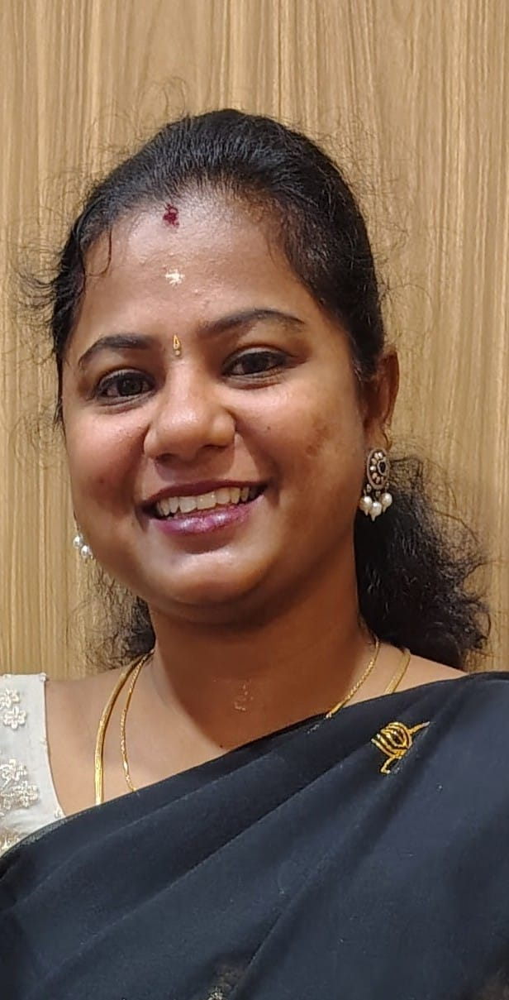

Preconception
Preparing for pregnancy, from everyday habits to helpful questions.
A welcoming conversation for questions about preparing for pregnancy, pregnancy wellness, postpartum recovery, breastfeeding and women's health. Join a live expert-led awareness session and bring your questions.

Inspired by the existing WisdaCare webinar page, these are the five main themes. This event provides general educational information, not personal diagnosis or treatment.
Preparing for pregnancy, from everyday habits to helpful questions.
Health and comfort through pregnancy, common questions and myths.
Physical and emotional recovery after childbirth.
Frequently asked feeding questions and concerns.
Everyday health and wellbeing questions at any life stage.
Enter your contact details below to prepare your free registration message.

Join us for a special Women's Wellness Q&A with Dr. Nandhini, Obstetrician & Gynaecologist, Fertility Specialist, and Laparoscopic Surgeon.
🤰 From fertility and pregnancy concerns to motherhood and newborn care, let's talk openly and get evidence-based answers.
Learn about health education, awareness programmes and future expert-led events across childhood, adolescence, motherhood, family wellbeing and healthy ageing.
Explore WisdaCare ↗